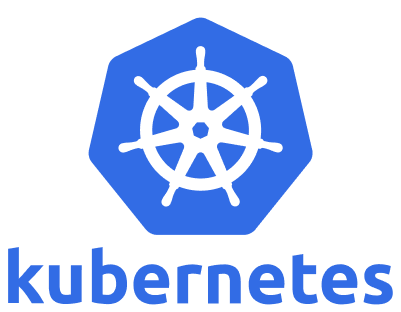
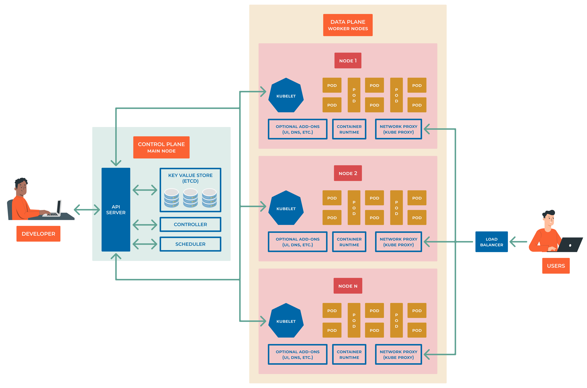

9.0 Introduction
Container
A container is a standard unit of software that packages up code and all its dependencies so the application runs quickly and reliably from one computing environment to another. A Docker container image is a lightweight, standalone, executable package of software that includes everything needed to run an application: code, runtime, system tools, system libraries and settings.
Container images
A container image is a lightweight, standalone, executable package of software (blueprint) that includes everything needed to run an application: code, runtime, system tools, system libraries, and settings. Container images are built from one or more layers, with each layer representing a specific component of the image.
Container images allow us to confine the application code, its runtime, and all of its dependencies in a pre-defined format. This makes it easy to deploy and run applications in a consistent manner across different environments.
Container images are stored in a registry, such as DockerHub, Artifactory, Harbor, Amazon Elastic Container Registry, Azure Container Registry, and can be pulled from the registry and run as containers on a host. They are designed to be portable and can be run on any host that supports the container runtime.
Containers runtime
A container runtime is the software that executes containers and manages container images on a node. Here are some of the key container runtimes compatible with Kubernetes:
Docker: Perhaps the most well-known container runtime, Docker was the default runtime for Kubernetes for a long time. It uses containerd and runc underneath.
containerd: An industry-standard core container runtime. It is available as a daemon for Linux and Windows, which can manage the complete container lifecycle of its host system: image transfer and storage, container execution and supervision, low-level storage, and network attachments, etc.
CRI-O: An implementation of the Kubernetes Container Runtime Interface (CRI) that enables using OCI (Open Container Initiative) compatible runtimes. It’s a lightweight alternative to Docker, designed specifically for Kubernetes.
Kata Containers: A runtime that provides strong isolation by running each container in a lightweight virtual machine. It combines the speed and efficiency of containers with the security of VMs.
gVisor: A container runtime developed by Google that provides an additional layer of isolation between running containers and the host operating system. gVisor implements a user-space kernel, providing a sandboxed environment for the container processes.
Firecracker: Created by AWS, Firecracker is used for running multi-tenant container workloads. It’s designed to be lightweight and offer fast startup times, making it suitable for serverless computing.
LXC/LXD: LXC (Linux Containers) is an older Linux container runtime, while LXD is a container “hypervisor” that manages LXC containers. They offer a different approach to container management and are known for their strong support for system containers (as opposed to application containers).
runC (OCI): The default OCI (Open Container Initiative) runtime for Kubernetes. It’s a lightweight, portable container runtime that implements the OCI runtime specification.
Container Orchestrators
Container Orchestrators are responsible for managing the lifecycle of containers, including starting, stopping, and restarting them. They also provide a set of APIs for interacting with the cluster, such as creating and deleting Pods, Services, and Deployments.
List of container orchestrators:
Kubernetes: An open-source container orchestrator that automates the deployment, scaling, and management of containerized applications. It provides a set of abstractions and built-in features for defining, deploying, and scaling containerized applications, as well as a set of APIs for interacting with the cluster.
Docker Swarm: A container orchestrator that allows you to deploy and manage containers on a cluster of Docker hosts. It provides a set of APIs for interacting with the cluster, such as creating and deleting services, scaling services up and down, and updating services.
Apache Mesos: A distributed systems kernel that abstracts CPU, memory, storage, and other compute resources away from machines (physical or virtual), enabling fault-tolerant and elastic distributed systems to easily be built and run effectively.
Nomad: A distributed, highly available, datacenter-aware cluster and application scheduler designed to support the modern datacenter with support for long-running services, batch jobs, and much more.
Amazon ECS: A container orchestrator that allows you to run Docker containers on a cluster of EC2 instances. It provides a set of APIs for interacting with the cluster, such as creating and deleting services, scaling services up and down, and updating services.
Azure Container Instances: A container orchestrator that allows you to run Docker containers on a cluster of Azure VMs. It provides a set of APIs for interacting with the cluster, such as creating and deleting services, scaling services up and down, and updating services.
Google Kubernetes Engine: A container orchestrator that allows you to run Docker containers on a cluster of Google Compute Engine instances. It provides a set of APIs for interacting with the cluster, such as creating and deleting services, scaling services up and down, and updating services.
OpenShift: A container orchestrator that allows you to run Docker containers on a cluster of OpenShift nodes. It provides a set of APIs for interacting with the cluster, such as creating and deleting services, scaling services up and down, and updating services.
Rancher: A container orchestrator that allows you to run Docker containers on a cluster of Rancher nodes. It provides a set of APIs for interacting with the cluster, such as creating and deleting services, scaling services up and down, and updating services.
Cloud Foundry: A container orchestrator that allows you to run Docker containers on a cluster of Cloud Foundry nodes. It provides a set of APIs for interacting with the cluster, such as creating and deleting services, scaling services up and down, and updating services.
Why to use Container Orchestrators?
While we can manully manage containers, it’s not a scalable solution. Container orchestrators are designed to automate the deployment, scaling, and management of containerized applications. They provide a set of abstractions and built-in features for defining, deploying, and scaling containerized applications, as well as a set of APIs for interacting with the cluster.
Container orchestrators are also designed to be highly scalable, allowing organizations to manage large numbers of containers across multiple hosts. They provide a unified view of the cluster and ensure that the desired state of the cluster is maintained, while the worker node components provide the computational resources necessary to run containers and Pods.
Container orchestrators can:
Automate the deployment, scaling, and management of containerized applications.
Provide a set of abstractions and built-in features for defining, deploying, and scaling containerized applications.
Provide a set of APIs for interacting with the cluster.
Provide a unified view of the cluster and ensure that the desired state of the cluster is maintained.
Provide the computational resources necessary to run containers and Pods.
Group containers into logical units (Pods) and manage them as a single unit.
Allow implementation of security policies and access control.
Kubernetes
Kubernetes is an open-source container orchestrator that automates the deployment, scaling, and management of containerized applications. It provides a set of abstractions and built-in features for defining, deploying, and scaling containerized applications, as well as a set of APIs for interacting with the cluster.
Note
TL;DR Kubernetes is a platform AND an ecosystem for managing containerized applications.
Note
Kubernetes is an open-source container orchestration system for automating the deployment, scaling, and management of containerized applications. It is designed to provide a platform-agnostic way to manage and orchestrate containers, whether they are running on-premises or in the cloud.
Kubernetes is an application orchestrator.
Docker and Kubernetes have worked well together since the beginning of Kubernetes. Docker builds applications into container images and can run them as containers. Kubernetes can’t do either of those. Instead, it sits at a higher level and orchestrates things.
Containerd (pronounced “container dee”) has replaced Docker as the default container runtime in most Kubernetes clusters. However, containerd is a stripped-down version of Docker that’s optimized for Kubernetes. As such, all container images created by Docker will continue to work on Kubernetes. In fact, both Docker and Kubernetes work with containers that support the Open Containers Initiative (OCI) specification.
Why is named Kubernetes?
You will hear that Kubernetes comes from Borg and Omega systems, made by Google, in a way it’s true the codebase shares some of the DNA with those systems, but it’s not a fork of them. Kubernetes is a new project, built from scratch, and it’s not an open-source version of Borg or Omega.
For a very long time, Google has been operating containers at scale, processing billions of containers each week. These containerized apps were orchestrated by two in-house technologies dubbed Borg and Omega. The key is that although each of the three is distinct, they are all connected.
Actually, several of the individuals responsible for creating Borg and Omega were and are currently active with Kubernetes. Therefore, even though Kubernetes was created from scratch, it makes extensive use of the knowledge gained through Borg and Omega at Google.
2014 saw the donation of the open-source project Kubernetes to the CNCF. Version 1.0 arrived back in July 2015, and as of this writing, we are well into version 1.20 and averaging three major releases per year. It is released under the Apache 2.0 license.
The name “Kubernetes” (koo-ber-net-eez) comes from the Greek word meaning Helmsman the person who steers a ship. This theme is reflected in the logo, which isthe wheel (helm control) of a ship.
{kind=link}
Kubernetes was originally going to be called Seven of Nine by some of the developers. If you are familiar with Star Trek, you will be aware that Seven of Nine is a Borg drone that the crew of the USS Voyager, led by Captain Kathryn Janeway, managed to save. Sadly, it couldn’t have been dubbed Seven of Nine due to copyright constraints. The designers subtly referenced Seven of Nine by giving the emblem seven spokes.
Before continuing, just one more thing regarding the name. It is frequently abbreviated to “K8s” (pronounced “kates”). The eight characters between the letters “K” and “s” are replaced with the number 8.
High level Kubernetes architecture
{kind=link}
From high up in the sky, Kubernetes is
a cluster to run applications on (replaces the VMs and physical servers)
an orchastrator to manage the cluster (replaces the hypervisor)
Kubernetes as a cluster
A K8s cluster consists of control plane (master node) and data plane (worker/slave nodes).
The control plane manages the cluster and the worker nodes. It is responsible for maintaining the desired state of the cluster, such as which applications are running and where they are running. It also handles scheduling, scaling, and updating applications.
The data plane is where the applications run. It consists of one or more worker nodes, which are responsible for running the applications and providing the computational resources necessary to run them.
Kubernetes as an orchastrator
Note
An orchastrator is a tool that automates the deployment, scaling, and management of applications.
An Kubernetes orchastrator is a tool that automates the deployment, scaling, and management of containerized applications. It provides a set of abstractions and built-in features for defining, deploying, and scaling containerized applications, as well as a set of APIs for interacting with the cluster.
Description
Kubernetes provides a set of abstractions for defining, deploying, and scaling containerized applications, including:
Pods: The smallest and simplest unit in the Kubernetes object model, a pod represents a single process or container running in a cluster.
Replication Controllers: Responsible for ensuring that a specified number of replicas of a pod are running at any given time.
Service: An abstraction that defines a logical set of pods and a policy by which to access them.
Deployments: An abstraction that provides declarative updates for Pods and Replication Controllers.
Kubernetes also provides a set of built-in features such as self-healing, discorvery and load balancing, storage orchastration, secret management, and rolling updates, which help to ensure that the applications running on the cluster are always available and up-to-date.
How Kubernetes works?
Kubernetes also provides a set of APIs for interacting with the cluster, and it can be easily integrated with a variety of tools and services, such as monitoring, logging, and security.
Kubernetes is widely adopted in the industry for its ability to handle complex, large-scale deployments, it’s also a cloud-agnostic, and it can run on most cloud providers as well as on-premises. Its wide adoption also means that there’s a large and active community that is constantly working on improving and adding new features to the system.
In summary, Kubernetes is an open-source container orchestration system that automates the deployment, scaling, and management of containerized applications. It provides a set of abstractions and built-in features for defining, deploying, and scaling containerized applications, as well as a set of APIs for interacting with the cluster. It is widely adopted in the industry for its ability to handle complex, large-scale deployments and its cloud-agnostic nature.
The Kubernetes architecture consists of several components that work together to manage and orchestrate containers in a cluster. The components can be divided into two categories: control plane components and worker node components.
Control Plane Components:
API Server: The central component that exposes the Kubernetes API and serves as the control plane for the cluster. ALL COMMUNICATIONS GO THROUGH API SERVER!!!
etcd: A distributed key-value store that stores the configuration data for the cluster.
Controller Manager: Manages the various controllers, such as the Replication Controller, that work to maintain the desired state of the cluster.
Scheduler: Assigns Pods to worker nodes based on the resource requirements and constraints defined in the Pod specification.
Worker Node Components:
Kubelet: An agent that runs on each worker node, responsible for ensuring that containers are running and healthy.
Container runtime: The software responsible for managing containers on the node, such as Docker or Containerd.
kube-proxy: A network proxy that runs on each worker node and provides network connectivity to Pods.
Kubernetes Objects: Kubernetes uses a declarative model to represent the desired state of the cluster. Kubernetes objects are persistent entities in the Kubernetes system that represent the desired state of the cluster, such as Pods, Services, and Deployments.
In addition, Kubernetes also includes several optional components, such as the Kubernetes Dashboard, which provides a graphical interface for managing the cluster, and add-on components, such as ingress controllers, which provide additional functionality for the cluster.
The Kubernetes architecture is designed to be highly scalable, allowing organizations to manage large numbers of containers across multiple worker nodes. The control plane components work together to provide a unified view of the cluster and to ensure that the desired state of the cluster is maintained, while the worker node components provide the computational resources necessary to run containers and Pods.
Pods
A Kubernetes pod is the smallest and simplest unit in the Kubernetes object model. It is a group of one or more containers that are deployed together on the same host and share the same network namespace.
A pod provides a single IP address and a single hostname for all of its containers, allowing them to communicate with each other as if they were on the same host. Pods also share the same storage volumes and can access the same environment variables.
Pods are designed to be ephemeral and disposable, meaning that they can be created and deleted as needed. They are also scalable, as multiple replicas of a pod can be created to handle increased traffic or load.
Pods are the building blocks of Kubernetes applications, and they are used to deploy, scale, and manage the containers that make up an application. They are managed by the Kubernetes controller, which ensures that the desired number of replicas are running and healthy at all times.
Note
Guidelines issued by the Inclusive Naming Initiative (inclusivenaming.org) promote responsible language and tries to avoid harmful terms.
Container Orchestrator’s distributions:
Docker Enterprise
Google Anthos
Azure Kubernetes Service
Amazon Elastic Kubernetes Service
Rancher
Red Hat OpenShift
VMware Tanzu
SUSE Rancher
Canonical Charmed Kubernetes
IBM Cloud Paks
Platform9 Managed Kubernetes
Mirantis Kubernetes Engine
Nutanix Karbon
D2iQ Konvoy
Oracle Container Engine for Kubernetes
IBM Cloud Kubernetes Service
DigitalOcean Kubernetes
Linode Kubernetes Engine
Alibaba Cloud Container Service for Kubernetes
Tencent Kubernetes Engine
Huawei Cloud Container Engine
OVH Managed Kubernetes
Why use Kubernetes?
Kubernetes is an open-source container orchestration system that automates the deployment, scaling, and management of containerized applications.
Kubernetes provides a set of abstractions and built-in features for defining, deploying, and scaling containerized applications, as well as a set of APIs for interacting with the cluster.
Kubernetes is widely adopted in the industry for its ability to handle complex, large-scale deployments and its cloud-agnostic nature.
Cloud Native Computing Foundation (CNCF)
The Cloud Native Computing Foundation (CNCF) is one of the largest sub-projects hosted by the Linux Foundation. CNCF aims to accelerate the adoption of containers, microservices, and cloud-native applications.
CNCF hosts a multitude of projects, with more to be added in the future. CNCF provides resources to each of the projects, but, at the same time, each project continues to operate independently under its pre-existing governance structure and with its existing maintainers.
Projects within CNCF are categorized based on their maturity levels:
Sandbox
Incubating
Graduated
Popular graduated projects:
Kubernetes container orchestrator
etcd distributed key-value store
CoreDNS DNS server
containerd container runtime
Envoy cloud native proxy
Fluentd for unified logging
Harbor registry
Helm package management for Kubernetes
Linkerd service mesh for Kubernetes
Open Policy Agent policy engine
Prometheus monitoring system and time series DB
Rook cloud native storage orchestrator for Kubernetes
Key incubating projects:
argo workflow engine for Kubernetes
Buildpacks.io builds application images
CRI-O container runtime
Contour ingress controller for Kubernetes
gRPC for remote procedure call (RPC)
CNI for Linux containers networking
flux continuous delivery for Kubernetes
Knative serverless containers in Kubernetes
KubeVirt Kubernetes based Virtual Machine manager
Notary for data security